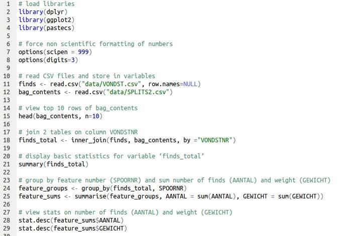

# join 2 tables on column VONDSTNR
finds_total <- inner_join(finds, bag_contents, by ="VONDSTNR")Join tables and bacic statistics
Ronald Visser ![]()
Alex Brandsen
Joining Tables and Basic Statistics
So now we have the two tables stored in variables separately, but to be able to do analyses using information from both, we need to join them. We can do this with the inner_join() function:
This function takes the first two arguments (finds & bag_contents) and joins them together where VONDSTNR (find number) is the same in both tables. Now have a look in the Environment tab, you should see a finds_total variable, open it in table view to check the data has been merged successfully.
Now we have all the data in one variable, we can very easily do some basic descriptive statistics on this table by using the summary() function:
# display basic statistics for variable 'finds_total'
summary(finds_total) OPGR_ID.x PUTNR VLAKNR VAKNR
Length:1374 Min. : 1.00 Min. : 1.00 Min. : 1.0
Class :character 1st Qu.:13.00 1st Qu.: 1.00 1st Qu.:103.0
Mode :character Median :16.00 Median : 1.00 Median :108.0
Mean :17.21 Mean : 1.55 Mean :149.2
3rd Qu.:23.00 3rd Qu.: 1.00 3rd Qu.:204.0
Max. :99.00 Max. :104.00 Max. :305.0
NA's :922
SPOORNR VULLINGNR SEGMENTNR VONDSTNR
Min. : 1 Min. : 1.000 Mode:logical Min. : 1.0
1st Qu.: 39 1st Qu.: 1.000 NA's:1374 1st Qu.: 220.2
Median : 89 Median : 1.000 Median : 472.5
Mean :1018 Mean : 1.067 Mean : 531.6
3rd Qu.:3000 3rd Qu.: 1.000 3rd Qu.: 839.8
Max. :5001 Max. :11.000 Max. :1088.0
NA's :125
INHOUD.x MONSTER VERZAMEL DATUM
Length:1374 Length:1374 Length:1374 Mode:logical
Class :character Class :character Class :character NA's:1374
Mode :character Mode :character Mode :character
OPMERKING.x INVDATUM.x OPGR_ID.y INHOUD.y
Length:1374 Length:1374 Length:1374 Length:1374
Class :character Class :character Class :character Class :character
Mode :character Mode :character Mode :character Mode :character
ABR_ALG ABR_SPECSVU AANTAL GEWICHT
Length:1374 Length:1374 Min. : 1.000 Min. : 0.10
Class :character Class :character 1st Qu.: 1.000 1st Qu.: 6.00
Mode :character Mode :character Median : 2.000 Median : 14.60
Mean : 4.543 Mean : 60.56
3rd Qu.: 4.000 3rd Qu.: 41.50
Max. :200.000 Max. :3280.00
NA's :10 NA's :11
DOOSNR LOKATIE BEWAARD. OPMERKING.y
Min. :1.00 Length:1374 Mode :logical Length:1374
1st Qu.:3.00 Class :character FALSE:1369 Class :character
Median :4.00 Mode :character TRUE :5 Mode :character
Mean :3.79
3rd Qu.:5.00
Max. :9.00
NA's :73
INVDATUM.y BEWAARCATEGORIE
Length:1374 Length:1374
Class :character Class :character
Mode :character Mode :character
This returns quite a lot of information for each column. For numerical data, it will return the min and max value, as well as the mean and median. For text data, it will give you counts for each occurance in that column. So for example, we can see that the mean weight (column GEWICHT) of a finds bag is 60.56 and the maximum finds in one bag is 200 (column AANTAL).
Of course this could be useful information for some research, but generally we want to do more in depth analysis, such as comparing finds between features. To do this, we first need to group finds by SPOORNR (feature number) and then sum the weight and number of finds.
# group by feature number (SPOORNR) and sum number of finds (AANTAL) and weight (GEWICHT)
feature_groups <- group_by(finds_total, SPOORNR)
feature_sums <- summarise(feature_groups,
AANTAL = sum(AANTAL),
GEWICHT = sum(GEWICHT))Here we use the group_by() function to group finds_total by SPOORNR and save it as feature_groups. Then we use summarise() to sum the number of finds (AANTAL) and weight (GEWICHT) in the grouped table, giving us the weight and number of finds per feature (saved in variable feature_sums). In your Environment tab, view feature_sums in table view to see what the data looks like.
Now we can use the stat.desc() function from the pastecs library to view statistics about specific columns. We give the function the variable plus the column we want statistics for, joined by the dollar sign ( $ ):
# view stats on number of finds (AANTAL) and weight (GEWICHT)
stat.desc(feature_sums$AANTAL) nbr.val nbr.null nbr.na min max range
152.000000 0.000000 9.000000 1.000000 1363.000000 1362.000000
sum median mean SE.mean CI.mean.0.95 var
5759.000000 12.000000 37.888158 9.575449 18.919162 13936.762243
std.dev coef.var
118.054065 3.115857 stat.desc(feature_sums$GEWICHT) nbr.val nbr.null nbr.na min max range
1.510000e+02 0.000000e+00 1.000000e+01 2.200000e+00 1.372781e+04 1.372561e+04
sum median mean SE.mean CI.mean.0.95 var
7.728261e+04 1.224000e+02 5.118054e+02 1.084921e+02 2.143701e+02 1.777350e+06
std.dev coef.var
1.333173e+03 2.604843e+00 In the output in the Console we can see the sum, median, mean, and so in for both of these columns. For example, the maximum number of finds in a feature is 1363. This gives us some information about the distribution of finds per feature, but it’s much easier to view this sort of information as a graph, which is what we’ll do in the next section.
At this point, your code should look something like this:

If it doesn’t, or if you get any errors, please download this file and copy it into your dawn-course.r file, so you can continue with the next part.